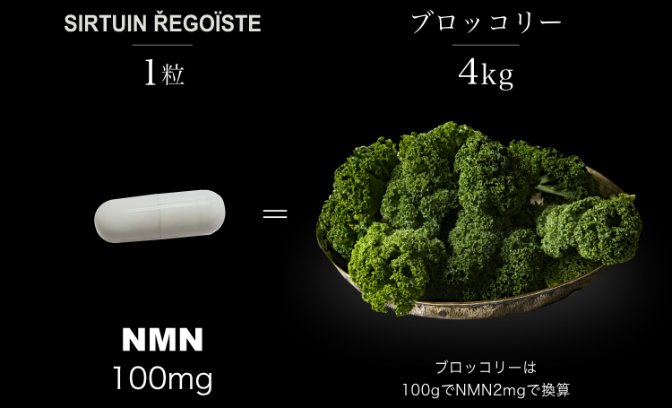

サーチュイン レゴイスト


推奨摂取量 2粒/日

※1 年齢に応じた栄養面によるケア
※2 期間：集計期間2020年1月〜2021年2月

多くの医療関係者に選ばれました。
おかげさまで
NMNサプリメント部門 No.1
3
冠受賞

※調査実施先：当社調べ。 調査機関：2021年02月20日～03月20日 調査対象者：医療関係者 325名
※調査概要：NMNサプリメントを取り扱う10社を対象としたブランド名イメージ調査 調査方法：インターネット調査
若さと美しさを求めるあなたへ。

自活力を
サポートしながら、
時間を取り戻す
エイジングケア ※1サプリメント。
超高齢化社会に突入した日本。年齢とともに変化する身体の調子が気になる…そんな中、世界中の研究者から注目されているのが、NMN（ニコチンアミド・モノヌクレオチド）です。
若々しさや健康の維持を目指すあなたへ。人生100年時代、輝く毎日のために、未来のエイジングケア※1を先取りする次世代のサプリメント、SIRTUIN REGOISTEが完成しました。
SIRTUIN REGOISTEは、1日2粒分のカプセルにNMNを
200mg、5種類の美容成分をたっぷり配合。
SIRTUIN REGOISTEのエイジングケア※1で、生命科学研究
と発酵のチカラをお確かめください。
※1 年齢に応じた栄養面によるケア

NMNの
自活力で
体の
内側から
美しく。


こんな
お悩み
ありませんか？
最近ハリが
なくなった
気がする
色々エイジング
ケアを試したのに
これといったものが
見つからない
いつも疲れが
とれない…
体がだるい…
いつまでも
若々しく
いたい…
健康や美容の
ために何かしたい！
体を動かす
能力が低下して
いる気がする…
もしかしたら
年齢とともに減少する
NADのせいかも…？
あらゆる生物がエネルギーを
作り出すための中心的な役割を
果たしている補酵素。

減少したNADを補おうと、NADそのものを摂取しても、体内には吸収されません。まずは体内でNADに変換されるNMNを取り入れることが必要です。
NMNを取り入れよう。
世界が注目している
ニコチアミドモノヌクレオチド

年齢に負けない身体の自活力を
サポートする成分


ワシントン大学セントルイス校医学部今井眞一郎教授とハーバード大学医学部デビッド・シンクレア教授が生後2年（ヒト年齢約60歳）のマウスにNMNを1週間投与したら、生後6ヶ月（ヒト年齢約20歳）の外観、活動レベル、活性レベル他まで取り戻した結果など数々の研究から注目を集めています。


しかし、
年を取ると、
体内でＮＭＮを合成する
能力が衰えてくる

年齢を重ねるごとに体内で
ＮＭＮを合成する能力が衰えてきます。
ＮＭＮは
食物から摂取するだけでは
とても足りません。
ＮＭＮはエダマメ、ブロッコリー、アボカドなどの野菜やフルーツ、タネ類などに含まれていますが、食物から摂取するだけではとても足りません。
そこで
マウス実験で示したように、
外からＮＭＮを取り入れること
が
必要です。

新発想
年齢に負けない
時間を取り戻す エイジングケア※1サプリ
NMN
NMNの
自活力で
体の
内側から
美しく。

サーチュイン レゴイストは
通常のサプリとは違い、
年齢に負けない身体の自活力を
体の内側からサポートします。
NMNの
配合量
1製品（60粒）あたり
国産のNMN原料を6000mg配合！
高価で希少な成分「NMN」を
贅沢に配合しました。
高品質の
サプリがお手軽
過剰包装をやめ、必要最低限の包装に一度に大量生産して生産効率UP。NMNに加えレスベラトロールも配合しました。さらに美肌に必要とされるプラセンタを贅沢に複数種配合しています。

体の内側から
キレイをサポート
いつまでも若々しく、アクディブに暮らしたい。健康や美容の気になる方のために、エイジングケアに嬉しい成分をたっぷり配合しました。
安心・安全な
国内製造
SIRTUIN REGOISTEは高品質な商品をご提供できるように衛生管理と科学合成手法（酵素法による原料不使用。）による製造を徹底した「安全」「安心」の国内工場にて製造しております。
毎日、忙しいあなたへ。
時間を取り戻す エイジングケア※1サプリ

女性にうれしい
5種類の美容成分
お飲みいただく際はできる限り、水またはお湯とともにお召し上がりください。
飲むタイミングに特に決まりはありませんので、毎日の生活スタイルに合わせて、お好きなタイミングでお召し上がりください。
飲み忘れに気が付いた場合は、飲み忘れに気が付いた日から1日の目安量2粒をお召し上がりください。
併用するサプリメントの種類によっては、「サーチュインレゴイスト」に配合されている成分と同じ場合があり、1日の摂取上限量を超えてしまう可能性があります。適正量を摂取していただくために、飲み始める前にかかりつけの医師・薬剤師のアドバイスを受けることをおすすめします。
いつまでもキレイで
ありたいあなたへ
時間を取り戻す エイジングケア※1サプリ
NMNの
自活力で
体の
内側から
美しく。